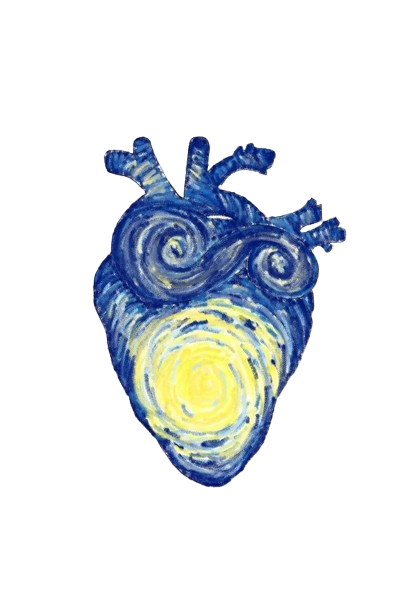
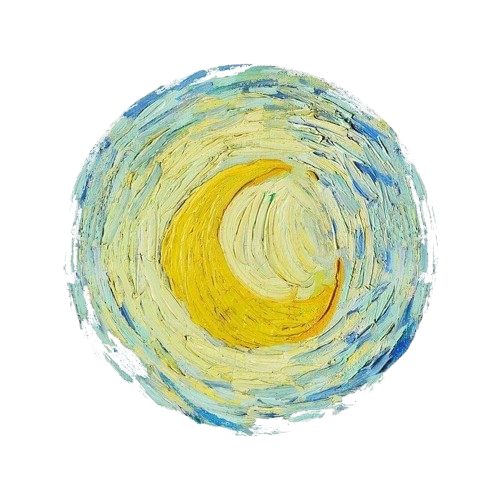

1 ANO
Além das Estrelas

Onde o tempo parou
Às vezes eu penso no tempo. No quanto tudo passa, no quanto tudo muda, no quanto nada realmente fica. Pessoas vêm e vão, momentos viram lembranças, e a vida continua andando, mesmo quando a gente queria que ela parasse.
Mas no meio desse mundo enorme, indiferente e silencioso, eu encontrei você.
E isso, por si só, já muda toda a minha história.
Porque não importa o que aconteça no futuro, não importa quanto tempo passe, não importa para onde a vida leve cada um de nós… Nada muda o fato de que, em algum momento do tempo, em algum lugar do universo, nós existimos juntos.

Nossa eternidade particular